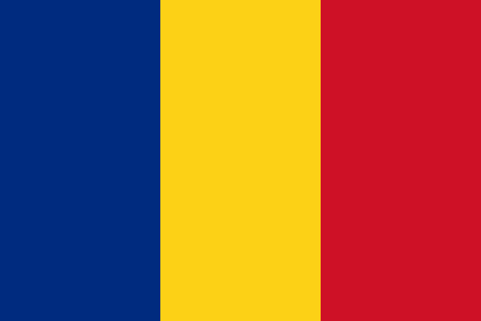

Drapelul național al României este tricolor, cu benzile verticale, începând de la lance, albastru, galben și roșu. Are o proporție de 2:3 între lățime și lungime.
Constituția României prevede la articolul 12, alineatul 1 că „Drapelul României este tricolor; culorile sunt așezate vertical, în ordinea următoare începând de la lance: albastru, galben, roșu”. Proporțiile, nuanțele culorilor precum și protocolul drapelului au fost stabilite prin Legea nr. 75 din 16 iulie 1994
Drapelul este foarte asemănător cu drapelul civil al Andorrei și cel de stat al Ciadului, neavând însă nicio legătură cu acestea. Asemănarea cu drapelul Ciadului, care diferă de drapelul românesc doar prin nuanța ușor mai închisă a fâșiei albastre (indigo, în loc de cobalt cum e la cel românesc), a stârnit discuții la nivel internațional: ambasada Ciadului de la Moscova a înaintat Organizației Națiunilor Unite un protest oficial, prin care cerea ca drapelul României să nu mai fie arborat la ONU, protest respins deoarece existența tricolorului vertical albastru-galben-roșu ca drapel al României este anterioară existenței statului Ciad. Tricolorul românesc este, de asemenea, înrudit cu cel al Republicii Moldova, acesta din urmă având însă o proporție diferită (1:2 în loc de 2:3), un albastru mai deschis și stema țării în centru.
|  | |
| Utilizare | Drapel și pavilion național |
| Proporții | 2:3 |
| Adoptat |
14 iunie 1848 |
| Desen |
Tricolor albastru-galben-roșu cu |